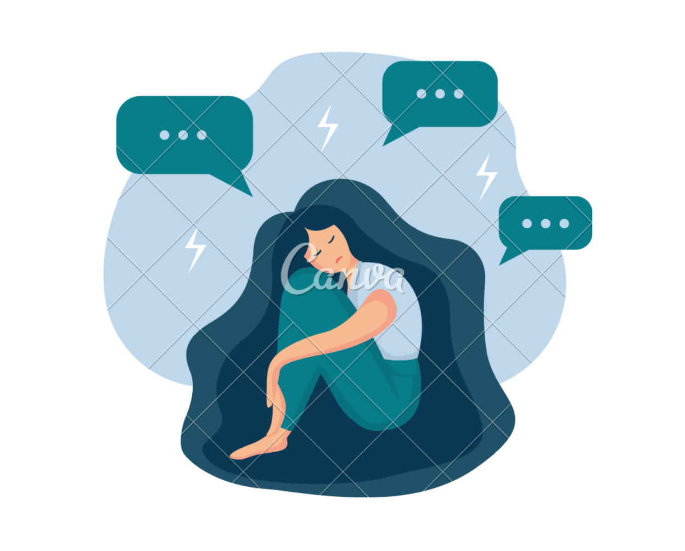

Avoiding
Avoiding triggers and stressors is important to help an individual remove themselves from an unhealthy environment and mindset.
Triggers can stimulate, intensify, and bring back unwanted memories and symptoms.
This does not mean full avoidance because over time the individual should slowly deal with these triggers and accept them so that they can fully leave baggage and trauma behind.
Recognizing

Recognizing a problem is the most important step to start solving the problem.
One must first acknowledge that there is really a cause for concern.
Failing to do so or being in denial may result in a more severe condition.
Families, peers and school or work superiors may also be instrumental in recognizing these problems and in helping
the concerned individual see it from an outsider’s point of view.
Managing
Managing is addressing the problem head-on. This may be done by directing one’s focus to more productive and healthy diversions.
One should also build up sense of self confidence and create new habits to lessen stress and anxiety levels.
Asking for guidance from parents and other family members, meeting with the school’s guidance counsellor or seeking professional help
from a Psychiatrist or Psychologist are essential.
Managing is a concerted effort of the person and the people around him/her.